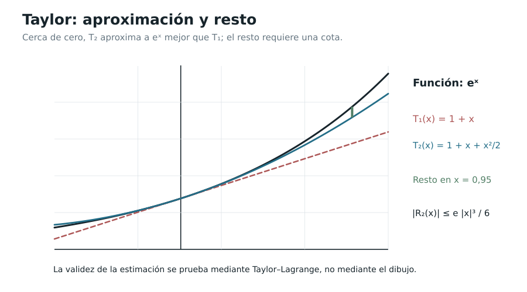

Capítulo 9. Newton, Taylor y el problema del error
Índice del libro · Prefacio · Itinerarios
Exposición · Ejercicios · Soluciones
Pregunta generadora. Si conocemos una función y sus primeras derivadas en un punto, ¿hasta dónde podemos reconstruirla mediante un polinomio? ¿Qué informa una aproximación finita y qué prueba adicional haría falta para transformarla en una identidad con una serie infinita?
En C08 supimos cómo una serie de potencias puede definir una función y cómo recuperar sus coeficientes mediante derivadas en el centro. Si comenzamos con una función dada, esa relación sugiere el camino inverso: usar sus derivadas para formar los coeficientes de una serie. Todavía tenemos que averiguar si las sumas parciales así construidas se acercan a la función que queríamos representar.
Podemos empezar con una pregunta finita. Buscamos un polinomio que comparta con la función el valor y las primeras derivadas en un punto; luego estudiamos la diferencia entre ambos en otro punto cercano. Esa diferencia, el resto, permitirá medir la aproximación y decidir después si desaparece al aumentar el orden. El binomio de Newton ofrece una primera identificación por otro camino: construiremos su suma mediante C08 y la reconoceremos comparando derivadas. Taylor permitirá estudiar el problema desde los datos de una función y las cotas de sus restos.
9.1. Un problema algebraico anterior al infinito
La identidad \((1+x)^2=1+2x+x^2\) es exacta; no es una aproximación. Más generalmente, para un entero \(m\ge0\) definimos \(\binom m k=m!/[k!(m-k)!]\) cuando \(0\le k\le m\) y \(\binom m k=0\) si \(k>m\). La relación de Pascal
\[ \binom m k+\binom m{k-1}=\binom{m+1}k \]
se verifica reuniendo ambas fracciones bajo el mismo denominador. Adoptamos \(\binom m0=1\) y \(0!=1\).
Teorema 9.1 (binomio finito; EDC-C09-THM-001). Para cada entero \(m\ge0\) y todo \(x\in\mathbb R\),
\[ \boxed{(1+x)^m=\sum_{k=0}^m\binom m k x^k.} \]
Demostración. Para \(m=0\) ambos miembros valen uno. Supongamos la fórmula demostrada para \(m\). Multiplicar la suma por \(1+x\) produce una copia con los mismos exponentes y otra cuyos exponentes aumentan en uno. Para cada potencia interior \(x^k\), las dos contribuciones son \(\binom m k\) y \(\binom m{k-1}\); Pascal las reúne como \(\binom{m+1}k\).
En el término constante sólo contribuye la primera copia, con coeficiente uno; en el de grado \(m+1\) sólo la segunda, también con uno. Estos son los extremos de la fórmula para \(m+1\), de modo que la inducción concluye. Todos los productos y agrupaciones se efectuaron sobre sumas finitas. \(\square\)
¿Qué cambia cuando el exponente no es entero no negativo? Para \(\alpha\in\mathbb R\) introducimos los coeficientes binomiales generalizados
\[ \binom\alpha0=1,\qquad \binom\alpha n=\frac{\alpha(\alpha-1)\cdots(\alpha-n+1)}{n!}\quad(n\ge1). \]
Definición 9.1 (EDC-C09-DEF-001). Llamamos serie binomial formal de exponente \(\alpha\) a \(\sum_{n\ge0}\binom\alpha n x^n\). La palabra formal recuerda que todavía debemos probar para qué \(x\) converge y qué función representa. Si \(\alpha=m\in\mathbb N_0\), los coeficientes posteriores a \(m\) son cero y recuperamos la identidad finita.
9.2. El binomio de Newton: convergencia e identificación
La identidad binomial que conocemos para los exponentes enteros se obtiene mediante una suma finita: después de cierto término, los coeficientes desaparecen y el desarrollo se detiene. Con un exponente real cualquiera contamos con la misma regla para calcular los coeficientes, pero en general la sucesión continúa indefinidamente, de modo que antes de preguntarnos si esa expresión representa a \((1+x)^\alpha\) necesitamos saber para qué valores de \(x\) existe su suma. Incluso cuando la convergencia esté asegurada, quedará la dificultad más interesante, pues dos funciones pueden tener expresiones cuyos primeros términos coinciden sin que ello nos permita identificarlas.
Teorema 9.2 (binomio real generalizado; EDC-C09-THM-002). Para todo \(\alpha\in\mathbb R\) y \(|x|<1\),
\[ \boxed{(1+x)^\alpha=\sum_{n=0}^{\infty}\binom\alpha n x^n.} \]
La potencia del miembro izquierdo está definida porque \(1+x>0\) (C02). Si \(\alpha\notin\mathbb N_0\), el radio de la serie de la derecha es exactamente uno; si \(\alpha\in\mathbb N_0\), la serie termina y la igualdad polinómica vale para todo \(x\in\mathbb R\). En el caso no polinómico, este teorema no afirma ninguna identidad en \(x=\pm1\): los puntos fronterizos requieren un análisis separado.
Demostración. Escribamos \(c_n=\binom\alpha n\). La fórmula de los coeficientes binomiales generalizados parece complicada cuando se contempla cada uno por separado, pero entre dos coeficientes consecutivos existe una relación muy sencilla: para construir \(c_{n+1}\) a partir de \(c_n\), añadimos al numerador el factor \(\alpha-n\) y al denominador el factor \(n+1\). Incluso para \(n=0\) esta regla funciona, pues \(c_0=1\) y \(c_1=\alpha\). De ese cálculo se obtiene la identidad
\[ (n+1)c_{n+1}=(\alpha-n)c_n \]
válida para todo \(n\ge0\). La ventaja de expresar el cambio de un coeficiente al siguiente de esta manera es que ya no necesitamos conocer los valores de todos los coeficientes para averiguar cómo se comporta la serie. Más adelante volveremos a la misma identidad, cuando la derivación término a término nos obligue a comparar los coeficientes de dos series de potencias; la recurrencia servirá entonces para reconocer su suma.
Consideremos el caso en que \(\alpha\notin\mathbb N_0\). Ningún coeficiente \(c_n\) se anula, porque ninguno de los factores \(\alpha,\alpha-1,\ldots,\alpha-n+1\) puede ser cero; si además fijamos \(x\ne0\), los términos sucesivos de la serie son no nulos y podemos comparar sus módulos. La recurrencia anterior da
\[ \left|\frac{c_{n+1}x^{n+1}}{c_nx^n}\right| =|x|\frac{|\alpha-n|}{n+1}\longrightarrow|x|. \]
El factor que depende de \(n\) tiende a uno, pues \(\alpha\) permanece fijo mientras el índice crece, y esto explica por qué el límite del cociente depende únicamente de \(|x|\). Para comprender qué nos dice el criterio de la razón, supongamos primero que \(|x|<1\) y escojamos un número \(q\) comprendido estrictamente entre \(|x|\) y \(1\). A partir de un índice suficientemente grande, el módulo de cada término queda acotado por \(q\) veces el del anterior, de modo que la cola de la serie puede compararse con una progresión geométrica convergente; así se obtiene la convergencia absoluta mediante el Teorema 8.6. Cuando \(|x|>1\) sucede lo contrario: podemos elegir \(q\) con \(1<q<|x|\), y los módulos de los términos consecutivos terminan creciendo al menos por ese factor. En particular, los términos no tienden a cero, condición indispensable para que una serie converja.
En \(x=0\) el cociente de términos no está definido, aunque allí la serie se reduce a \(c_0=1\) y converge sin dificultad. Hemos probado, por tanto, que para \(\alpha\notin\mathbb N_0\) el radio de convergencia es exactamente uno; no hemos decidido nada sobre \(x=1\) o \(x=-1\), donde el límite de las razones vale uno y el criterio deja de dar información. Para \(\alpha=m\in\mathbb N_0\) el argumento es distinto y más sencillo: los coeficientes posteriores a \(m\) son cero, la serie termina y recuperamos el polinomio del Teorema 9.1 para todo \(x\in\mathbb R\).
La convergencia ya nos permite trabajar con una función bien definida en el intervalo abierto \((-1,1)\):
\[ F(x)=\sum_{n=0}^{\infty}c_nx^n. \]
Conocer la convergencia de \(F\) aún no determina qué función hemos construido, y tampoco bastaría saber que sus primeras sumas parciales se parecen al binomio esperado. Podemos progresar porque \(F\) es una serie de potencias y estamos trabajando en el interior de su radio: el Teorema 8.9, demostrado en el capítulo 8, autoriza allí la derivación término a término. La precaución importa, pues la convergencia de una serie de funciones cualquiera no permite efectuar esa operación sin hipótesis adicionales. Al derivar el término \(c_nx^n\) aparece \(nc_nx^{n-1}\) para \(n\ge1\); si comenzamos a contar desde el exponente cero en la serie derivada, obtenemos
\[ F'(x)=\sum_{n=0}^{\infty}(n+1)c_{n+1}x^n. \]
Nuestro propósito es utilizar la recurrencia de los coeficientes, donde figuran precisamente \(c_{n+1}\) y \(c_n\). Para reunirlos necesitamos mirar una misma potencia de \(x\) en las series de \(F'\) y de \(xF'\). La primera aporta al coeficiente de \(x^n\) el número \((n+1)c_{n+1}\); la segunda aporta \(nc_n\), porque la multiplicación por \(x\) desplaza los exponentes una posición, y en el término constante esa segunda contribución es cero. Sumamos ambas expresiones dentro de \(|x|<1\), donde las series involucradas convergen y las operaciones están justificadas, y obtenemos
\[ (1+x)F'(x) =\sum_{n\ge0}\big((n+1)c_{n+1}+nc_n\big)x^n =\alpha\sum_{n\ge0}c_nx^n=\alpha F(x). \]
La última igualdad es exactamente la información que buscábamos en la recurrencia, pues \((n+1)c_{n+1}+nc_n=(\alpha-n)c_n+nc_n=\alpha c_n\) para cada índice. La función suma satisface, por tanto, la relación \((1+x)F'(x)=\alpha F(x)\). Pensemos qué ocurre con la función que querríamos obtener: \(G(x)=(1+x)^\alpha\) está definida y es positiva para \(-1<x<1\), y la regla para derivar potencias reales demostrada en C02 da igualmente \((1+x)G'(x)=\alpha G(x)\). La semejanza es prometedora, pero todavía tenemos que demostrar que estas condiciones identifican la función, en vez de invocar sin prueba un resultado general sobre ecuaciones diferenciales. La positividad de \(G\) nos ofrece una vía directa: como nunca se anula, podemos comparar ambas funciones mediante su cociente, que debería permanecer constante si las dos varían de la misma manera.
Esa observación explica la elección de la función auxiliar \(H(x)=(1+x)^{-\alpha}F(x)\): es precisamente \(F(x)/G(x)\), definida en todo \((-1,1)\) sin necesidad de suponer que \(F(x)\) sea distinta de cero. Derivar \(H\) es una forma de comprobar directamente si la razón entre las dos funciones cambia; al aplicar la regla del producto, aparecen \(F'\) y \(F\) con los coeficientes necesarios para utilizar la relación que acabamos de demostrar:
\[ H'(x)=(1+x)^{-\alpha-1}\big((1+x)F'(x)-\alpha F(x)\big)=0. \]
Hemos reducido la identificación de las dos funciones a una afirmación conocida sobre derivadas nulas. Para verla sin omitir el argumento, tomemos cualesquiera \(u<v\) del intervalo \((-1,1)\): el teorema del valor medio de C03 proporciona un punto \(c\) entre ambos para el cual \(H(v)-H(u)=H'(c)(v-u)=0\). Así, todos los valores de \(H\) son iguales, y esa constante queda determinada al evaluar en cero, donde la serie es particularmente sencilla: \(F(0)=c_0=1\) y \((1+0)^{-\alpha}=1\), de donde \(H(0)=1\). Por consiguiente, \(H(x)=1\) para todo \(x\in(-1,1)\), y al recuperar \(F\) obtenemos la igualdad con \((1+x)^\alpha\). El argumento no extiende por sí solo esa identidad a \(x=\pm1\), y tampoco ha empleado una fórmula de Taylor ni un teorema general de existencia o unicidad para ecuaciones diferenciales. \(\square\)
Ejemplos. Para \(|x|<1\),
\[ \begin{aligned} (1+x)^{-1}&=1-x+x^2-x^3+\cdots,\\ (1+x)^{1/2}&=1+\frac{x}{2}-\frac{x^2}{8}+\frac{x^3}{16}-\frac{5x^4}{128}+\cdots,\\ (1-x)^{-2}&=\sum_{n=0}^{\infty}(n+1)x^n. \end{aligned} \]
Las dos últimas igualdades también pueden controlarse por derivación e identidades algebraicas; ninguna justifica sustituir automáticamente \(x=\pm1\) fuera del intervalo probado.
Proposición 9.1 (cuatro niveles de afirmación; EDC-C09-PRP-001). Para una función \(f\) con derivadas apropiadas en \(a\) distinguiremos: (i) el polinomio de grado \(n\) determinado por derivadas; (ii) el resto \(f-P_n\); (iii) la convergencia de la serie \(\sum f^{(k)}(a)(x-a)^k/k!\); (iv) la igualdad de su suma con \(f(x)\). Ninguna afirmación (i) para un orden aislado implica por sí sola (iii) o (iv). Justificación. La construcción de (i) es finita; para (iii) se requieren cotas sobre infinitos coeficientes y para (iv) hace falta mostrar que el resto tiende a cero. El contraejemplo explícito de §9.10 demostrará que incluso (iii) puede cumplirse sin (iv). \(\square\)
9.3. Del dato diferencial al polinomio único
Sea \(a\) un punto interior de un intervalo y supongamos que \(f\) admite derivadas hasta orden \(n\) en \(a\). Denotamos \(f^{(0)}=f\) y \(f^{(k)}\) la derivada iterada. Definimos
\[ T_{n,a}f(x)=\sum_{k=0}^{n}\frac{f^{(k)}(a)}{k!}(x-a)^k. \]
Definición 9.2 (EDC-C09-DEF-002). \(T_{n,a}f\) es el polinomio de Taylor de orden \(n\) de \(f\) en \(a\); cuando \(a=0\), lo llamamos polinomio de Maclaurin. No se presume que su grado exacto sea \(n\): puede ser menor si los últimos coeficientes se anulan.
Teorema 9.3 (interpolación diferencial única; EDC-C09-THM-003). Existe un único polinomio \(P\) de grado a lo sumo \(n\) tal que
\[ P^{(k)}(a)=f^{(k)}(a)\qquad(0\le k\le n), \]
y es \(P=T_{n,a}f\).
Demostración. Escribimos el polinomio en potencias de \(x-a\) porque cada una separa un dato al evaluar sus derivadas en el centro. Después de \(k\) derivaciones, un monomio de grado menor que \(k\) ha desaparecido; uno de grado mayor todavía contiene una potencia positiva de \(x-a\) y vale cero en \(a\). El de grado \(k\) se convierte en la constante \(k!\).
Por ello el coeficiente \(f^{(k)}(a)/k!\) produce exactamente el dato de orden \(k\) y no altera los otros datos al evaluar en el centro. El polinomio \(T_{n,a}f\) cumple todas las igualdades del enunciado.
Para probar unicidad, restamos dos candidatos. La diferencia \(Q\) tiene grado a lo sumo \(n\) y todas sus derivadas hasta ese orden son cero en \(a\). Al expresarla en potencias de \(x-a\), el mismo cálculo determina cada coeficiente como \(Q^{(k)}(a)/k!=0\). La diferencia es nula y los candidatos coinciden. \(\square\)
Los datos locales determinan el polinomio entero, pero aún no determinan cuánto se separa de \(f\) al alejarnos del centro. Una fórmula para esa diferencia hará útil la construcción como aproximación.
9.4. El resto de Lagrange: un teorema finito
Teorema 9.4 (Taylor con resto de Lagrange; EDC-C09-THM-004). Sean \(a\ne x\) y \(I\) el intervalo cerrado que tiene a \(a\) y \(x\) como extremos. Fijado \(n\ge0\), supongamos que \(f,f',\ldots,f^{(n)}\) son continuas en \(I\) (con derivadas interiores correspondientes) y que \(f^{(n+1)}\) existe en el interior de \(I\). Entonces existe un punto \(\xi\) estrictamente entre \(a\) y \(x\) tal que
\[ \boxed{f(x)=T_{n,a}f(x)+\frac{f^{(n+1)}(\xi)}{(n+1)!}(x-a)^{n+1}.} \]
Cuando \(x=a\), el resto es cero y la identidad es inmediata. La continuidad de \(f^{(n+1)}\) no es necesaria para la forma de Lagrange.
Demostración. Fijamos el punto de evaluación \(x\) y dejamos moverse el centro del polinomio a lo largo del segmento. Queremos una función auxiliar que se anule en ambos extremos para aplicar Rolle, y cuya derivada permita despejar el resto. Para \(t\in I\) definimos
\[ \Phi(t)=f(x)-\sum_{k=0}^{n}\frac{f^{(k)}(t)}{k!}(x-t)^k-K(x-t)^{n+1}, \]
con \(K=[f(x)-T_{n,a}f(x)]/(x-a)^{n+1}\). En \(t=a\), esa elección hace que \(\Phi(a)=0\). En \(t=x\), sólo queda el término de grado cero de la suma, igual a \(f(x)\), y el último término también se anula; por tanto \(\Phi(x)=0\).
Las funciones \(f,\ldots,f^{(n)}\) son continuas en el segmento y tienen las derivadas necesarias en su interior. La función auxiliar es entonces continua hasta los extremos y derivable dentro de ellos. Rolle proporciona un punto \(\xi\) estrictamente entre \(a\) y \(x\) con \(\Phi'(\xi)=0\).
Para calcular la derivada, observamos dos contribuciones en cada término de la suma: derivar \(f^{(k)}(t)\) genera \(f^{(k+1)}(t)(x-t)^k/k!\); derivar la potencia, para \(k\ge1\), genera \(-f^{(k)}(t)(x-t)^{k-1}/(k-1)!\). Esta segunda contribución cancela la primera del término anterior. Sólo queda la primera del término de grado \(n\), y obtenemos
\[ \Phi'(t)=-\frac{f^{(n+1)}(t)}{n!}(x-t)^n+(n+1)K(x-t)^n. \]
Como \(\xi\) es interior, \(x-\xi\ne0\). Dividimos la igualdad \(\Phi'(\xi)=0\) por \((x-\xi)^n\), que vale uno si \(n=0\), y resulta \(K=f^{(n+1)}(\xi)/(n+1)!\). Reemplazar \(K\) da la fórmula. El argumento usa el segmento entre los extremos cualquiera que sea su orden, y conserva el signo de \((x-a)^{n+1}\). \(\square\)
Corolario 9.1 (cota de error; EDC-C09-COR-001). Bajo las hipótesis del Teorema 9.4, si \(|f^{(n+1)}(t)|\le M\) para todos los puntos interiores de \(I\), entonces
\[ \boxed{|f(x)-T_{n,a}f(x)|\le \frac{M|x-a|^{n+1}}{(n+1)!}.} \]
Demostración. Tomamos valor absoluto en la igualdad del teorema y usamos la cota de la derivada en \(\xi\). \(\square\)
La fórmula ubica la derivada que determina el resto en algún punto interior, sin decirnos cuál. Una cota que valga sobre todo el segmento permite controlar el error antes de conocer ese punto. Al cambiar de orden también cambia la derivada que debemos acotar; la utilidad de aumentar \(n\) dependerá del crecimiento de esas cotas.

9.5. El resto como integral y su relación con el cálculo acumulativo
Teorema 9.5 (resto integral; EDC-C09-THM-005). Si \(f\in C^{n+1}(I)\) sobre un intervalo cerrado \(I\) que contiene \(a,x\) (en el sentido de derivadas interiores prolongadas continuamente hasta los extremos), entonces
\[ \boxed{f(x)-T_{n,a}f(x)=\frac1{n!}\int_a^x f^{(n+1)}(t)(x-t)^n\,dt.} \]
La integral está orientada: la identidad sigue siendo correcta cuando \(x<a\).
Demostración. Para \(n=0\), el Teorema Fundamental de C06 identifica \(\int_a^x f'(t)dt\) con \(f(x)-f(a)\), que es el resto del polinomio constante. Para órdenes mayores, la integración por partes permitirá retirar una derivada cada vez. Llamemos
\[ I_n=\frac1{n!}\int_a^x f^{(n+1)}(t)(x-t)^n dt. \]
Para \(n\ge1\), elegimos la primitiva \(f^{(n)}\) del factor derivativo. El otro factor, \((x-t)^n/n!\), tiene derivada \(-(x-t)^{n-1}/(n-1)!\). Las hipótesis de regularidad permiten aplicar partes en el segmento cerrado. En el extremo \(t=x\), la potencia se anula; en \(t=a\), queda el término que debe retirarse del polinomio. La identidad es
\[ I_n=-\frac{f^{(n)}(a)}{n!}(x-a)^n+I_{n-1}, \]
donde \(I_{n-1}\) integra \(f^{(n)}\) con la potencia de grado \(n-1\). Repetimos hasta \(I_0=f(x)-f(a)\). Cada paso resta un término de Taylor y la suma de esas restas produce \(f(x)-T_{n,a}f(x)\).
Para \(x<a\) aplicamos las mismas identidades con integral orientada, como en C05–C07; los términos terminales y las potencias mantienen su signo. Para \(x=a\), la integral y el resto son cero. \(\square\)
Proposición 9.2 (cota integral; EDC-C09-PRP-002). Bajo las hipótesis del teorema precedente, si \(|f^{(n+1)}|\le M\) sobre \(I\), se obtiene nuevamente
\[ |f(x)-T_{n,a}f(x)|\le\frac{M|x-a|^{n+1}}{(n+1)!}. \]
Demostración. Tomamos el módulo de la integral del resto y la acotamos por la integral de los módulos sobre el segmento no orientado. La cota \(M\) deja el factor \(M/n!\) por la integral de \(|x-t|^n\). Si \(x>a\), ésta vale \((x-a)^{n+1}/(n+1)\) sobre \([a,x]\); si \(x<a\), sobre \([x,a]\) vale \((a-x)^{n+1}/(n+1)\). La regla de potencias y la sustitución afín de C06–C07 justifican ambas evaluaciones. Multiplicando obtenemos la cota, también nula si \(x=a\). \(\square\)
El resto integral reúne las contribuciones de la derivada siguiente en todo el tramo, mientras la forma de Lagrange las describe mediante un valor en un punto. Cada una sigue siendo una identidad finita para un orden elegido. Para estudiar una serie habrá que controlar cómo cambian estos restos con el orden.
9.6. Lo que garantiza la regularidad local: resto de Peano
Teorema 9.6 (Taylor–Peano; EDC-C09-THM-006). Si \(n\ge1\) y \(f\) es de clase \(C^n\) en un intervalo abierto alrededor de \(a\), entonces, cuando \(x\to a\),
\[ \boxed{f(x)=T_{n,a}f(x)+o(|x-a|^n).} \]
Para \(n=0\), la continuidad de \(f\) en \(a\) da \(f(x)=f(a)+o(1)\).
Demostración. Para un orden fijo \(n\ge1\), las hipótesis \(C^n\) permiten aplicar Lagrange al orden anterior, \(n-1\), en el segmento entre \(a\) y un punto cercano \(x\). Encontramos \(\xi_x\) entre ambos con
\[ f(x)=T_{n-1,a}f(x)+\frac{f^{(n)}(\xi_x)}{n!}(x-a)^n. \]
El polinomio de orden \(n\) añade a \(T_{n-1,a}f\) el término \(f^{(n)}(a)(x-a)^n/n!\). Al restarlo de la igualdad queda
\[ f(x)-T_{n,a}f(x)=\frac{f^{(n)}(\xi_x)-f^{(n)}(a)}{n!}(x-a)^n. \]
El punto \(\xi_x\) no necesita depender continuamente de \(x\): basta que esté en el segmento, porque \(|\xi_x-a|\le|x-a|\) lo obliga a acercarse a \(a\). La continuidad de \(f^{(n)}\) hace que el coeficiente de la potencia tienda a cero. Al dividir el módulo del error por \(|x-a|^n\) obtenemos por tanto un límite cero, que es la afirmación de Peano. Para \(n=0\), la continuidad de \(f\) da directamente \(f(x)-f(a)\to0\). \(\square\)
El orden permanece fijo mientras el punto se acerca al centro. Si queremos mantener el punto y aumentar el orden, necesitaremos una estimación que siga toda la sucesión de restos; el pequeño \(o\) obtenido aquí sólo controla el primer límite.
9.7. Tres funciones y errores explícitos
Exponencial. Sea \(a=0\), \(f(x)=e^x\). Todas sus derivadas son \(e^x\) (C02). Como \(e^t\le e^{\max(0,x)}\) en el segmento de \(0\) a \(x\), Lagrange proporciona
\[ \left|e^x-\sum_{k=0}^{n}\frac{x^k}{k!}\right| \le\frac{e^{\max(0,x)}|x|^{n+1}}{(n+1)!}. \]
Para cada \(x\) fijo, el miembro derecho tiende a cero, pues el cociente entre términos sucesivos de \(|x|^{n+1}/(n+1)!\) tiende a cero. Así se demuestra, ahora mediante Taylor finito, que la serie de la exponencial la representa para todo \(x\); esto reconcilia el resultado con la construcción especial de C02.
Seno y coseno. Sus derivadas iteradas siguen el ciclo \(\sin,\cos,-\sin,-\cos\) (C02), con módulo a lo sumo uno. Por el Corolario 9.1, para cada \(x\in\mathbb R\),
\[ \begin{aligned} \sin x&=\sum_{k=0}^{\infty}\frac{(-1)^k x^{2k+1}}{(2k+1)!},\\ \cos x&=\sum_{k=0}^{\infty}\frac{(-1)^k x^{2k}}{(2k)!}. \end{aligned} \]
En efecto, los polinomios de Maclaurin de órdenes \(n\) tienen errores acotados por \(|x|^{n+1}/(n+1)!\), que tienden a cero. Las series convergen a las funciones sin necesidad de invocar identidad formal de series al borde de un radio.
Logaritmo. C08 demostró, por integración de la geométrica en el interior de su radio,
\[ \ln(1+x)=\sum_{n=1}^{\infty}\frac{(-1)^{n-1}x^n}{n}\qquad(|x|<1). \]
La existencia de esta representación se apoya en el Teorema 8.9 y en la prueba ya ofrecida allí. No inferimos la misma igualdad en \(x=1\) por mera continuidad de \(\ln(1+x)\) ni por el Teorema 9.4 sin una cota que tienda a cero. En §9.9 relacionaremos esta representación con sus coeficientes de Maclaurin.
Corolario 9.2 (aplicación práctica; EDC-C09-COR-002). Si \(|x|\le1\), el polinomio \(1+x+x^2/2+x^3/6+x^4/24\) aproxima \(e^x\) con error menor que \(e/120\); si \(|x|\le1\), \(x-x^3/6\) aproxima \(\sin x\) con error a lo sumo \(1/120\).
Demostración. Para la exponencial, Lagrange con \(n=4\) da el resto \(e^\xi x^5/120\) cuando \(x\ne0\), con \(\xi\) estrictamente entre cero y \(x\). Si \(|x|\le1\), ese punto satisface \(\xi<1\) y por tanto \(e^\xi<e\); además \(|x|^5\le1\). El módulo del resto es estrictamente menor que \(e/120\). En \(x=0\) es cero y también cumple la cota estricta.
Para el seno, usamos su polinomio de Maclaurin de orden cuatro. El coeficiente de grado cuatro es cero, así que el polinomio coincide con \(x-x^3/6\). Su derivada quinta es \(\cos x\), de módulo a lo sumo uno, y Lagrange da un error a lo sumo \(|x|^5/120\le1/120\). \(\square\)
Estas cotas permiten elegir aproximantes con una tolerancia declarada. El orden del polinomio conserva los datos de derivadas utilizados, incluso si su grado final es menor porque algún coeficiente se anula.
9.8. La serie de Taylor y la condición exacta para que represente a la función
Definición 9.3 (EDC-C09-DEF-003). Si \(f\) posee derivadas de todos los órdenes en un entorno de \(a\), su serie de Taylor en \(a\) es
\[ \sum_{n=0}^{\infty}\frac{f^{(n)}(a)}{n!}(x-a)^n. \]
La serie está definida formalmente aunque sólo pueda converger en \(x=a\). Diremos que \(f\) es analítica real en \(a\) si esa serie converge y representa \(f\) en algún intervalo abierto que contiene a \(a\).
Teorema 9.7 (criterio de representación por Taylor; EDC-C09-THM-007). Sea \(f\) de clase \(C^\infty\) sobre un intervalo abierto que contiene a \(a\). Fijado un punto \(x\) de dicho intervalo, se tiene
\[ \boxed{f(x)=\sum_{n=0}^{\infty}\frac{f^{(n)}(a)}{n!}(x-a)^n} \]
si y sólo si los restos finitos \(R_n(x)=f(x)-T_{n,a}f(x)\) tienden a cero cuando \(n\to\infty\). Una condición suficiente es que existan \(M>0\) y \(B>0\) tales que, para todo \(k\ge1\) y todo \(t\) entre \(a\) y \(x\), se cumpla
\[ |f^{(k)}(t)|\le M B^k k!,\qquad B|x-a|<1. \]
Demostración. Las sumas parciales de la serie son los polinomios \(T_{n,a}f(x)\). La serie representa a \(f(x)\) precisamente cuando esos valores convergen a \(f(x)\), lo que equivale a que la diferencia \(R_n(x)\) tienda a cero.
Para la condición suficiente, aplicamos la cota finita de Lagrange con la derivada de orden \(n+1\). La hipótesis de crecimiento permite elegir para ella la cota \(M B^{n+1}(n+1)!\) en todo el segmento. El factorial se cancela con el denominador del resto y queda
\[ |R_n(x)|\le M\big(B|x-a|\big)^{n+1}\longrightarrow0. \]
La razón \(B|x-a|\) es menor que uno y su potencia tiende a cero. En el centro la identidad es inmediata. Hemos controlado los restos de todos los órdenes en el punto fijado y obtenido la representación. \(\square\)
Los números \(M\) y \(B\) deben servir para todos los órdenes y los puntos del segmento de esta comparación. Las cotas separadas para cada derivada, sin controlar su crecimiento con el orden, no proporcionan por sí solas la misma conclusión.
Proposición 9.3 (los coeficientes obligatorios; EDC-C09-PRP-003). Si una función \(f\) se representa cerca de \(a\) por una serie de potencias con radio positivo, sus coeficientes son precisamente \(f^{(n)}(a)/n!\).
Demostración. La representación con radio positivo permite derivar la serie en el interior por el Teorema 8.9 y repetir la operación mediante el control de órdenes fijos de la Proposición 8.3. En el centro, después de \(n\) derivaciones, los grados menores han desaparecido y los mayores conservan una potencia positiva de \(x-a\). El término de grado \(n\) da \(n!\) veces su coeficiente. Como la suma representa a \(f\) cerca de \(a\), esa derivada es \(f^{(n)}(a)\) y el coeficiente resulta \(f^{(n)}(a)/n!\). Para \(n=0\), evaluamos el valor en el centro. \(\square\)
9.9. Newton y el binomio vistos desde Taylor
Para \(f(x)=(1+x)^\alpha\) en \(|x|<1\), el cálculo de C02 y la inducción sobre derivadas dan
\[ f^{(n)}(x)=\alpha(\alpha-1)\cdots(\alpha-n+1)(1+x)^{\alpha-n}. \]
Al evaluar en cero, \(f^{(n)}(0)/n!=\binom\alpha n\). Por ello, los coeficientes binomiales del §9.2 son exactamente los coeficientes de Taylor de \(f\). Pero el orden de justificación es esencial: la identidad entre serie y potencia fue demostrada en el Teorema 9.2, no inferida de la existencia de todas las derivadas. Así, la convergencia del binomio de Newton proporciona un caso en que la serie de Taylor sí representa a la función en \(|x|<1\).
Teorema 9.8 (un ejemplo de radio finito que no limita el dominio de la función; EDC-C09-THM-008). La función \(f(x)=1/(1-x)\) está definida y es \(C^\infty\) en \((-\infty,1)\), pero su serie de Taylor en \(a=0\) tiene radio \(1\) y no converge en \(x=-2\), aunque \(f(-2)=1/3\) esté bien definido.
Demostración. La derivación sucesiva de \((1-x)^{-1}\) da \(f^{(n)}(x)=n!(1-x)^{-n-1}\). Se comprueba por inducción mediante la regla de potencias y la cadena de C02. En cero, los coeficientes de Taylor son por tanto \(f^{(n)}(0)/n!=1\).
La serie es la geométrica \(\sum_{n\ge0}x^n\), cuyo radio es uno por el Teorema 8.2. En \(x=-2\) sus términos \((-2)^n\) no tienden a cero y no hay suma. En cambio, el denominador de la función vale tres en ese punto, así que \(f(-2)=1/3\). \(\square\)
El radio pertenece a la representación centrada en un punto. La función racional tiene valores más allá de ese intervalo, pero la geométrica centrada en cero no los alcanza. Para el binomio no polinómico sucede algo semejante: su radio es uno y la investigación de las fronteras permanece separada de la definición de la potencia.
9.10. Una función infinitamente derivable cuya serie no la representa
Definamos \(g:\mathbb R\to\mathbb R\) mediante
\[ g(x)=\begin{cases}e^{-1/x^2},&x\ne0,\\0,&x=0.\end{cases} \]
La función es estrictamente positiva fuera del origen. Demostraremos que, sin embargo, todas sus derivadas en cero valen cero.
Lema 9.1 (la exponencial vence a cualquier potencia; EDC-C09-LEM-001). Para todo entero \(m\ge0\),
\[ \lim_{x\to0}|x|^{-m}e^{-1/x^2}=0. \]
Demostración. Para \(y>0\), la serie exponencial de C02 tiene términos no negativos. Cualquiera de ellos da una cota inferior, \(e^y\ge y^N/N!\). Queremos usar esa cota para dominar una potencia inversa de \(|x|\), así que elegimos \(N\) suficientemente grande para que \(2N>m\) y ponemos \(y=1/x^2\).
Al invertir la desigualdad entre números positivos y multiplicar por \(|x|^{-m}\) obtenemos
\[ 0\le |x|^{-m}e^{-1/x^2} \le N!|x|^{2N-m}\longrightarrow0. \]
El exponente final es positivo y \(N\) permanece fijo para el \(m\) elegido. El encajonamiento demuestra el límite por ambos lados del origen. \(\square\)
Teorema 9.9 (suavidad no implica analiticidad; EDC-C09-THM-009). \(g\) pertenece a \(C^\infty(\mathbb R)\) y \(g^{(n)}(0)=0\) para todos los enteros \(n\ge0\). Su serie de Taylor en cero converge a la función nula en toda la recta, y no coincide con \(g\) en ningún punto distinto de cero.
Demostración. Fuera del origen podemos derivar por las reglas de C02. Cada derivada tiene la forma \(P_n(1/x)e^{-1/x^2}\), con \(P_n\) polinomio: comenzamos con \(P_0=1\), y derivar añade los factores \(-P_n'(1/x)/x^2\) y \(2P_n(1/x)/x^3\), todavía polinomios en \(1/x\).
El Lema 9.1 controla cada monomio de esos polinomios. Una suma finita de cantidades que tienden a cero tiende también a cero; por tanto la expresión de cada derivada exterior se acerca a cero en el origen. Esto da primero la continuidad de \(g\), cuyo valor allí es cero.
Para probar derivabilidad sucesiva en el origen usamos una inducción. Supongamos que la derivada de orden \(n\) ya existe, tiene valor cero en el origen y coincide con la expresión exterior indicada. Su cociente incremental en cero satisface
\[ \frac{P_n(1/h)e^{-1/h^2}-0}{h}\longrightarrow0 \]
porque dividir por \(h\) añade una sola potencia inversa, que el mismo lema controla término a término. Así existe \(g^{(n+1)}(0)\) y vale cero. Su expresión exterior vuelve a tener forma polinómica por exponencial y tiende a cero, de modo que la derivada nueva es continua también en el origen. La inducción produce todas las derivadas y prueba \(g\in C^\infty(\mathbb R)\).
Los coeficientes de Taylor en cero son todos nulos. Cada polinomio parcial es cero y la serie converge a cero en toda la recta. Sin embargo, \(g(x)>0\) para \(x\ne0\), de modo que la serie no la representa fuera del centro. \(\square\)
Para cada orden fijo \(n\), el lema muestra \(g(x)=o(|x|^n)\) cuando \(x\to0\), en acuerdo con Peano. Si fijamos en cambio \(x\ne0\) y aumentamos el orden, el resto es siempre \(g(x)\), pues todos los polinomios parciales son cero. Ese resto positivo no cambia con \(n\). Los datos de todas las derivadas en un punto no han determinado aquí los valores vecinos de la función.
9.11. El método de Newton como aplicación del error de Taylor
La familia de métodos de aproximación no termina en series: el resto de orden uno permite analizar la iteración de Newton para buscar una raíz real de \(f\).
Teorema 9.10 (cota local de error de Newton; EDC-C09-THM-010). Sea \(f\in C^2([r-\delta,r+\delta])\), con \(f(r)=0\), \(\delta>0\), y supongamos que \(|f'(t)|\ge m>0\) y \(|f''(t)|\le M\) en todo el intervalo. Para \(x\) en él definamos
\[ N_f(x)=x-\frac{f(x)}{f'(x)}. \]
Entonces
\[ \boxed{|N_f(x)-r|\le\frac{M}{2m}|x-r|^2.} \]
Si además \(q=(M/2m)\delta<1\) (o \(M=0\)), toda iteración iniciada en \([r-\delta,r+\delta]\) permanece allí y converge a \(r\); para \(M>0\), sus errores satisfacen la cota cuadrática anterior.
Demostración. Si \(x=r\), la fórmula de Newton está definida por la cota inferior de \(|f'|\) y da \(N_f(r)=r\); el error es cero. Para \(x\ne r\), aplicamos Taylor–Lagrange de orden uno con centro \(x\) y evaluación en la raíz \(r\). Existe un punto \(\xi\) entre ambos con
\[ 0=f(r)=f(x)+f'(x)(r-x)+\frac{f''(\xi)}2(r-x)^2. \]
La aproximación lineal predice el punto \(x-f(x)/f'(x)\). La igualdad conserva además el resto cuadrático que mide cuánto se separa esa predicción de la raíz. Dividimos por \(f'(x)\), que no se anula, y reorganizamos:
\[ N_f(x)-r=\frac{f''(\xi)}{2f'(x)}(x-r)^2. \]
Las cotas de las dos derivadas dan la desigualdad. Para demostrar que pueda aplicarse en cada iteración, debemos conservar los puntos en el intervalo donde esas cotas valen. Si \(|x-r|\le\delta\), el error siguiente no supera \(q|x-r|\), con \(q=M\delta/(2m)\). Cuando \(q<1\) queda dentro del mismo intervalo; por inducción todos los iterados permanecen allí y sus errores satisfacen \(|x_k-r|\le q^k|x_0-r|\to0\). Además conservan la cota cuadrática de cada paso.
Si \(M=0\), el resto de primer orden es nulo y la igualdad muestra que el siguiente punto es la raíz. Los pasos posteriores permanecen en ella. \(\square\)
La estimación necesita un entorno donde la derivada esté separada de cero y la segunda derivada esté acotada. Dentro de él, el resto de Taylor controla la distancia que deja un paso de Newton y permite comprobar que el siguiente paso seguirá bajo las mismas hipótesis.
9.12. La genealogía histórica y el balance fundacional
El binomio y las aproximaciones de Taylor reúnen preguntas que surgieron en estudios de cuadraturas, tangentes e incrementos. El libro de Taylor de 1715 deja ver ese interés por pasar de magnitudes a cambios y regresar desde los cambios a las magnitudes.
En la construcción del capítulo, las derivadas en un punto determinan un polinomio finito. Las fórmulas de Lagrange, integral y Peano explican cómo compararlo con la función, cada una bajo sus hipótesis y con su alcance. La relación puede resumirse así:
\[ \underbrace{f^{(k)}(a)\ (0\le k\le n)}_{\text{datos locales}} \ \longrightarrow\ \underbrace{T_{n,a}f}_{\text{polinomio único}} \ \longrightarrow\ \underbrace{R_n(x)}_{\text{error finito}}. \]
Para pasar de los polinomios a una serie que represente la función, el resto debe tender a cero en los puntos donde afirmamos la igualdad. La exponencial y las funciones trigonométricas proporcionaron cotas factoriales que lo aseguran; el binomio se identificó mediante su derivada y un valor inicial. La función plana mostró cuánto puede faltar cuando sólo conocemos los coeficientes.
También usamos una relación de derivadas para medir el error de Newton. En C10 estudiaremos otras situaciones donde una función se caracteriza por su cambio y un dato inicial, y tendremos que justificar qué condiciones permiten determinarla.
Dependencias y alcance
- C00–C03: completitud, continuidad, teoremas de Rolle y valor medio, reglas de derivación sucesiva y desigualdades locales.
- C05–C07: integral propia, Teorema Fundamental e integración por partes para el resto integral.
- C08: convergencia de series, radio, derivación y multiplicación de series de potencias estrictamente dentro del radio.
- Resultados de C09:
THM-001--010,LEM-001,PRP-001--003,DEF-001--003,COR-001--002; pruebas finitas, aproximaciones controladas, binomio real, función plana y Newton local. - No utilizado: existencia general de soluciones de EDO (C10), teoría de funciones complejas, Lebesgue, Fourier, convergencia uniforme sistemática, afirmaciones sobre analiticidad sin control del resto.
Trabajo del lector
Los treinta problemas originales examinan por separado el binomio finito y generalizado, datos de derivadas, tres formas del resto, tolerancias numéricas, representación por series, ejemplos no analíticos y la iteración de Newton. Las soluciones desarrolladas conservan la misma numeración.